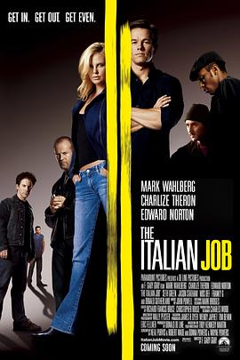

偷天换日 / The Italian Job
又名：天罗盗网(港) / 意大利任务 / 爆窃意大利
作品信息
| 导演 | F·加里·格雷 |
| 编剧 | 特洛伊·肯尼迪-马丁 / 唐娜·鲍尔斯 / 韦恩·鲍尔斯 |
| 主演 | 马克·沃尔伯格 / 查理兹·塞隆 / 唐纳德·萨瑟兰 / 杰森·斯坦森 / 赛斯·格林 / 茅斯·达夫 / 爱德华·诺顿 / 福斯托·卡莱加里尼 / 吉米·舒伯特 / 塔米·卡比莱特 / 玛丽·波特西尔 / 尚恩·范宁 / 埃里克·沃克 / 斯科特·安第斯 / 鲍里斯·李·库尔通格 / 朱莉·科斯特洛 / 奥斯卡·努内斯 / 弗兰基·G / 马蒂·瑞恩 / 奥莱克·克鲁帕 / 梅拉妮·珍 / 乔治·斯科特·柯民思 / 马丁·摩拉里斯 / 西蒙·瑞 / 梅里特·尤恩卡 / 凯莉·布鲁克 / 珍妮·海勒 / 约翰托宾 |
| 类型 | 动作 / 惊悚 / 犯罪 |
| 制片国家/地区 | 美国 / 英国 / 意大利 / 德国 |
| 语言 | 英语 / 英语 / 意大利语 |
| 上映日期 | 2003-05-30(美国) |
| 片长 | 111分钟 |
| IMDb | tt0317740 |
最后一次看到是 2026-08-12T21:13:24+08:00 · 豆瓣原页